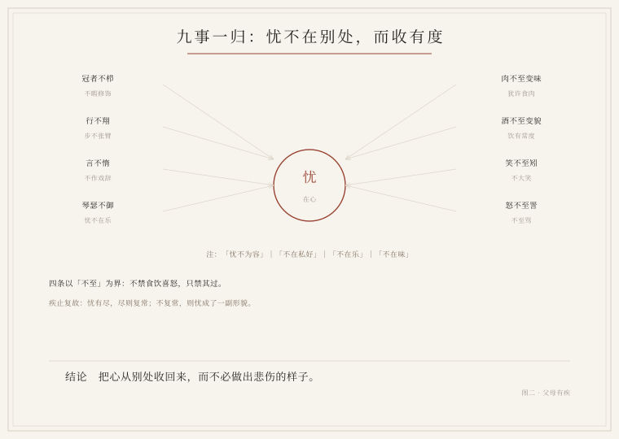

曲礼上 · 一·八十五 · 第 83 课
父母有病，为子者的一切日常起居都要收：不梳头、行不张臂、不说闲话、不弄琴瑟、食肉不多、饮酒不变脸色、笑不露齿根、怒不骂人；病好了才复常。
说什么事：父母有疾，冠者不栉，行不翔，言不惰，琴瑟不御，食肉不至变味，饮酒不至变貌，笑不至矧，怒不至詈，疾止复故。
落在哪一层：礼意，兼及容。所收者不是礼数，是心在外面的样子。
为何编在此位：上数节皆饮食之细，此节转言亲疾之子容，一节之内连举九事，为曲礼中最密的一段。
【经】父母有疾，冠者不櫛，行不翔，言不惰，琴瑟不御，食肉不至變味，飲酒不至變貌，笑不至矧，怒不至詈，疾止復故。
【注】憂不為容也。憂不在私好。惰，不正之言。憂不在樂。憂不在味。憂在心，難變也。齒本曰矧，大笑則見。自若常也。
不栉 栉，梳也。冠者本当栉，亲疾则不栉——不是不修容，是不暇修容。
不翔 翔，张臂而行。疏「行不翔」属「忧不为容」：步不张，容不舒。
言不惰 注「惰，不正之言」；疏「惰，讹不正之言」，又「好谓华好，言语戏剧，华饰文辞」。
琴瑟不御 御，用也。注「忧不在乐」。
不至变味 疏「犹许食肉，但不许多耳。少食则味不变，多食则口味变也」。不是断肉，是不使口味为肉所改。
不至变貌 饮酒而不至面变色。量与常同，不为亲疾而借酒。
笑不至矧 注「齿本曰矧，大笑则见」。笑可，但不大笑露齿根。
怒不至詈 詈，骂也。怒可，但不至骂。
疾止复故 注「自若常也」。病愈则一切复旧。
父母有病时，已冠的儿子不梳头修饰，走路不张臂舒展，说话不带戏谑巧辞，不弹琴瑟，吃肉不多到口味改变，饮酒不多到面色改变，笑不笑到露出齿根，怒不怒到开口骂人；父母病愈，就恢复如常。
九事一归：忧不在别处。注反复用「忧不在」三字——不在容、不在私好、不在乐、不在味。礼在这里不要求悲伤的形状，只要求把心从别处收回来；而收得有度：肉照吃、酒照饮、笑也照笑，只是不过。
第一层 不为容 注首句「忧不为容也」。亲疾之忧，不在修饰容貌上表现；不栉不是孝的表演，是心不在彼。
第二层 不在私好 言不惰、琴瑟不御，所收者是私人的嗜好。乐与戏，是心里有余裕时才起的东西。
第三层 有度之节 肉不至变味、酒不至变貌、笑不至矧、怒不至詈——四条都以「不至」为界。礼不禁食饮喜怒，只禁其过。这是本节最见分寸处。
第四层 疾止复故 注「自若常也」。忧有尽时，尽则复常。若病愈而仍作忧容，则忧成了一套形貌。
与今日何干 父母住院，子女不修边幅、不发玩笑的段子、饭照吃但不讲究、笑还是笑但不放肆。此节不需要学古礼，只需要把心收回来。
| 左 | 右 |
|---|---|
| 冠者不栉 | 不暇修饰，非不洁 |
| 行不翔 | 步不张臂，容不舒 |
| 言不惰 | 不作戏谑巧辞 |
| 琴瑟不御 | 忧不在乐 |
| 肉不至变味 | 犹许食肉，但不许多 |
| 酒不至变貌 | 饮有常度，不为忧借酒 |
| 笑不至矧／怒不至詈 | 喜怒可有，不可过 |
| 疾止复故 | 忧有尽，尽则复常 |
画室内一角：一张空席侧置（席面未舒开），席旁一张琴以布覆之、弦不张；案上一器肉只动了几筷、旁一酒爵酒仅浅降；窗下地面有一双鞋并拢、鞋尖朝内，示步不张。不画人、不写文字。赭色只在酒爵一道弦纹。
